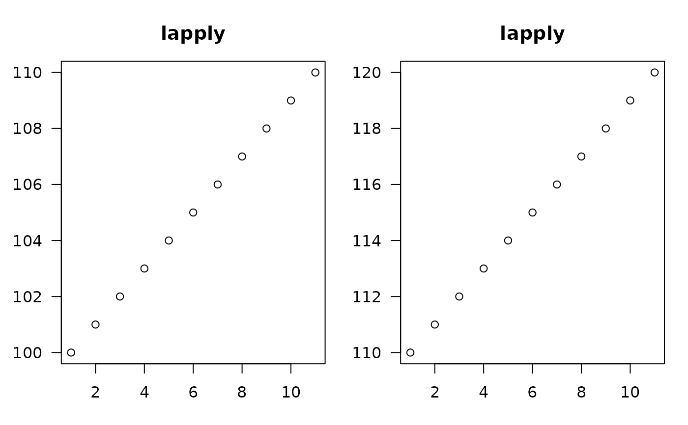
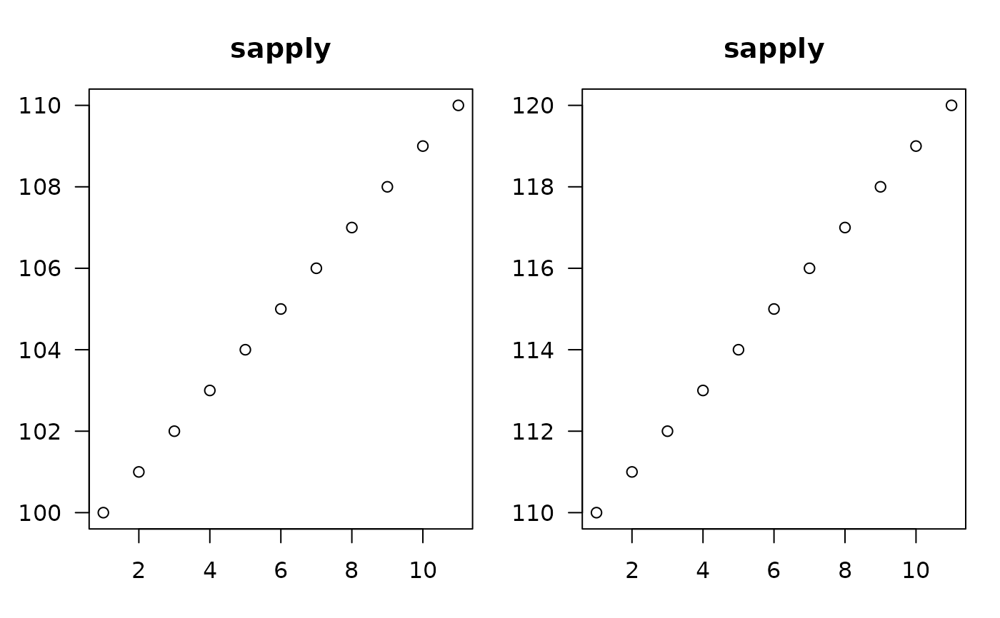

Apply a function over a list or vector with optional silence
Source:R/general_apply.R
apply_functions.RdWrapper functions around the base base::lapply and base::sapply functions that allow for the application of a function over a list or vector. It extends original functions by providing an option to suppress the output, effectively allowing for operations where the user may not care about the return value (e.g., plotting). This behaviour is similar to the purrr::walk function.
Arguments
- X
a vector (atomic or list) or an
expressionobject. Other objects (including classed objects) will be coerced bybase::as.list.- FUN
the function to be applied to each element of
X: see ‘Details’. In the case of functions like+,%*%, the function name must be backquoted or quoted.- Silent
Logical; if TRUE, the function returns
invisible(NULL)instead of the actual result, effectively suppressing the output. This enhances the base base::sapply for cases where the return value is not necessary and its output is undesired.- ...
Additional arguments to be passed to
FUN.- simplify
logical or character string; should the result be simplified to a vector, matrix or higher dimensional array if possible? For
sapplyit must be named and not abbreviated. The default value,TRUE, returns a vector or matrix if appropriate, whereas ifsimplify = "array"the result may be anarrayof “rank” (\(=\)length(dim(.))) one higher than the result ofFUN(X[[i]]).
Value
If Silent is TRUE, returns NULL invisibly, otherwise returns a
list of the same length as X, where each element is the result of
applying FUN to the corresponding element of X.
Examples
par(mfrow = c(1,2), oma = c(0.25, 0.25, 0.25, 0.25), mar = c(3,3,3,1))
lapply(list(x = 100:110, y = 110:120), function(V) {
plot(V, las = 1, main = "lapply")
})

#> $x
#> NULL
#>
#> $y
#> NULL
#>
# -------------------------------------------
par(mfrow = c(1,2), oma = c(0.25, 0.25, 0.25, 0.25), mar = c(3,3,3,1))
lapply_(list(x = 100:110, y = 110:120), function(V) {
plot(V, las = 1, main = "lapply_")
})
# -------------------------------------------
#' par(mfrow = c(1,2), oma = c(0.25, 0.25, 0.25, 0.25), mar = c(3,3,3,1))
sapply(
list(x = 100:110, y = 110:120),
function(V) {
plot(V, las = 1, main = "sapply")
})

#> $x
#> NULL
#>
#> $y
#> NULL
#>
# -------------------------------------------
# nothing returned or printed, only the plotting
par(mfrow = c(1,2), oma = c(0.25, 0.25, 0.25, 0.25), mar = c(3,3,3,1))
sapply_(
list(x = 100:110, y = 110:120),
function(V) {
plot(V, las = 1, main = "sapply_")
})